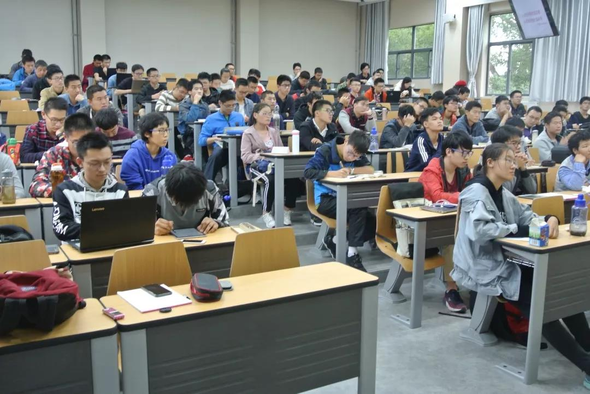
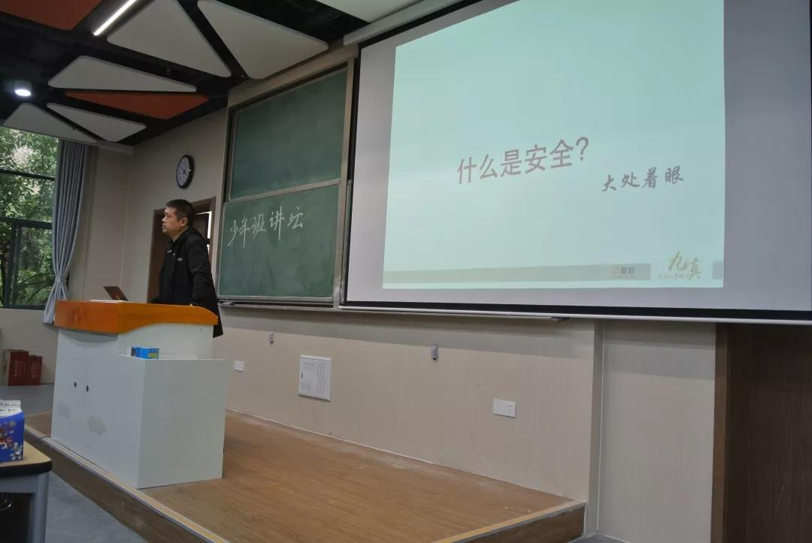
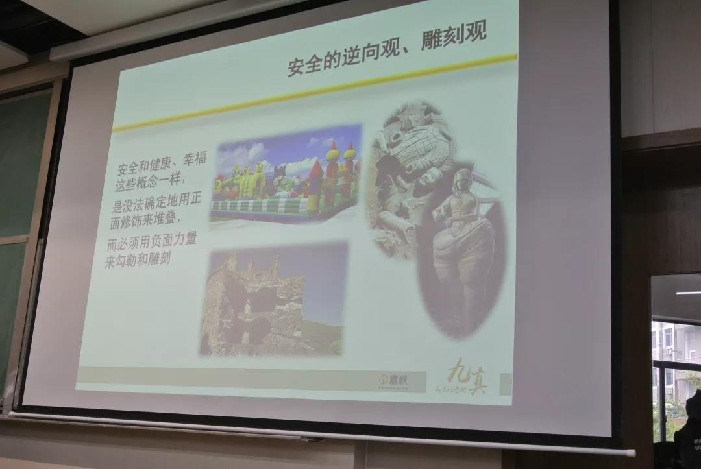
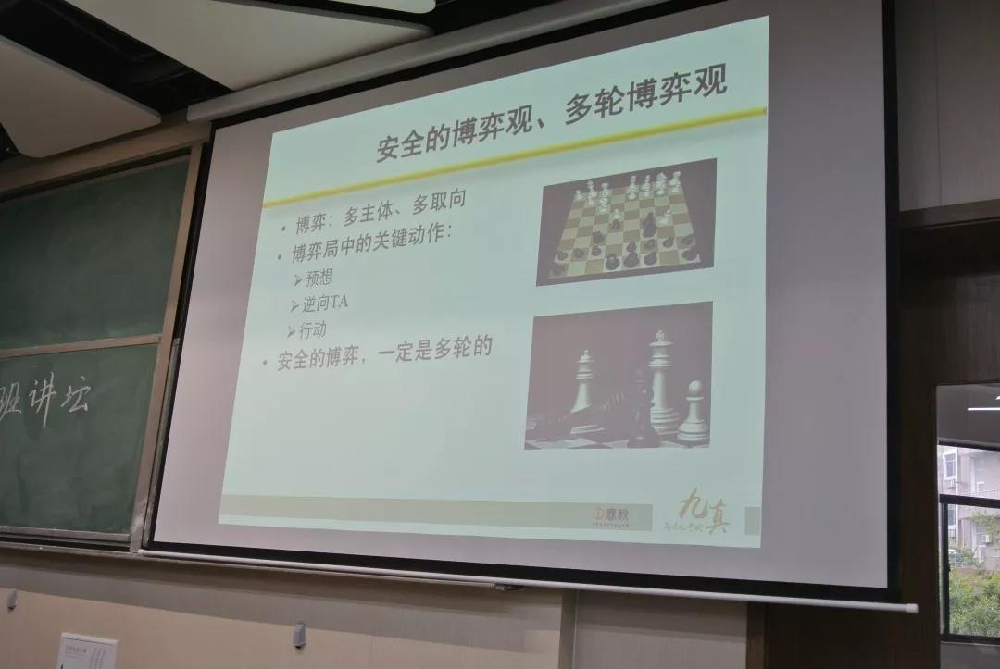
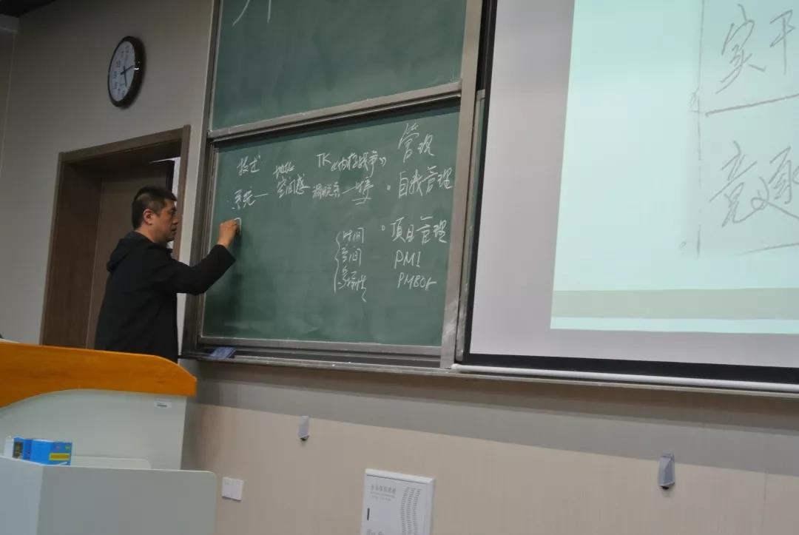

发布时间:2018-10-28 中国科大少年班学院学生会
网安之路，需我少年——记少年班讲坛潘柱廷场

本次讲座于10月22日下午4点整于第三教学楼举行，讲座中潘柱廷先生向同学们介绍了他对网络安全领域的认识以及他的九真观点。
1
正式讲座开始前，潘柱廷先生提出了对同学们的期望：作为中科大的学子，不应该追求平凡，应该以大师为目标，实现理想，成就人生价值，在当前大学生普遍追名逐利的风潮中要看淡名利，追逐更有意义的东西。
2
首先，潘柱廷先生为我们解释了什么是安全和安全的相对性，又用一些生动的例子向我们证明安全真的不是如我们所想的那样绝对。接着，潘先生又向我们介绍了做网络安全应有的素质。其一，做网络安全的意愿要从怀疑开始，怀疑是保证安全的基石，没有怀疑就无法发现问题威胁，更不用谈安全；其二，是要有对抗的思想，尤其是“安全没有对错，只有输赢”“IT，安全领域是没有统一的公共的价值观与誓言。”令我们记忆犹新。

紧接着，潘先生又为我们介绍了安全的三观——逆向观、雕刻观、博弈观。首先，潘先生简洁地介绍了逆向观与雕刻观，并提出安全的概念不能用正面的修饰来堆叠， 必须用负面的力量来勾勒和雕刻。然后，潘先生又详细介绍安全领域中的博弈必定是多主体、多取向、多轮次的，网络安全领域的竞争犹如一个棋局，是多元多维的，只有最强者才能破局，同时网络安全与各个领域关系密切，收获的果实不多，但对整个果园有重要意义。


之后，潘柱延先生提出了“三师模式”和“九真”两个概念：
他提到的三师即为讲师、向导、教练，学生应该向三者学习，从知识学习、前途指引、技能练习三个领域提高自己。

九真表格
潘柱廷先生又说：对自己影响最大的是环境和自己所选的道路，环境不用多说，道路有两条，一条是基础-竞逐-实干-前沿-深邃的技术道路，另一条是价值-理论-深邃的理论道路。他说：“网络安全从业者要有掌握，理解，‘逆向’的兴趣与能力。”发现同学们对竞逐充满好奇，他就为同学们解释竞逐是一个真与仿真过程，竞赛，是一个参考，对于一个学习安全的学生，竞赛可以进行横向比较，是学习过程中不可或缺的一环。
潘柱廷先生又补充了他对学习安全的必备技能的看法。必备技能分为两个方面，一为技术。技术包括很多，他强调最重要的有六种：系统、网络、编程、数据、密码学、硬件，这六项不一定要全部精通，但至少要精通一到两项，在这里木桶效应是不适用的，重要的不是补全短板而是伸长长板。其二为管理，包括自我管理和项目管理。

最后，对于行业现状，他又为同学们做了细致的介绍，他提到现在网络安全领域是建立在网络、算法、数据、计算四方面上，最顶尖的技术在于移动互联、人工智能、超算、大数据。行业的岗位也大体分为：学术研究、攻防研究和实施、工程、开发、方案设计和建设四类。
3
在潘柱廷先生的讲座过程中潘先生用生动的例子、幽默的语言配上细致的介绍，赢得了同学们阵阵掌声，讲座在同学们的掌声中落幕，但同学们收获的对网络安全理解将会受益终生。